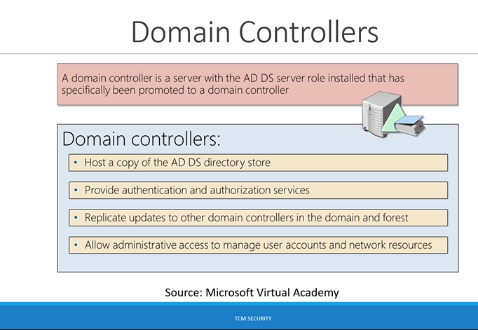

this is the head honcho of all the servers. When you set up a active directory you have domain controller.
there are some features of it.
it hosts what is called Active Directory Domain Services directory store. It means that it hosts your phone book(recall from previous section)
AD DS directory store has all the information on the users, the computers ,what printers are in the network etc. it knows evverything.
Provide authentication and authorization services(Kerberos is doing its work at the domain controller level)
Replicate updates to other domain controllers in the domain and forest which means that when we make an update to one item it updates across the board
Allow administrative access to manage user accounts and network resources. This is where we can add our computers where we can add policies we can do all different sorts of things at the Domain Controller level.
So again Domain Controller is the head honcho. When we attack an internal network it is very very bad if we can compromise the whole network potentially. So this is the one of the top targets when you're doing an internal assessment though it's not the only target.
do not get your eyes set on just doing Domain Controller compromise there are other informations client might want as well. Think about potentially PII(personally identifiable information) especially if it's related to social security numbers or sensitive information about people. Think about any kind of credit card information that might be obtained. Or any proprietary information
So dont think about just compromising domain controller think about what might be very damaging to client. What could you do as an attacker?

So the big takeaway from the Active Directory Data Store is that it holds this file called Ntds.dit which is very very sensitive file.
Typically when you compromise a Domain Controller you want to grab this file. Because it contains everything that is stored in Active Directory data that means all the users the objects the groups etc.
More importantly it contains password hashes for all users in that domain yyou can take them off line try to crack them. You can attempt pass the hash attacks you can attempt golden tickets attacks with the hash.